02.8 경우의 수와 순열/조합
이 장에서는 경우의 수와 순열/조합에 관한 기초부터 심화 개념들을 유기적으로 결합하여 학습합니다.
02.8.1 경우의 수와 합의 법칙, 곱의 법칙
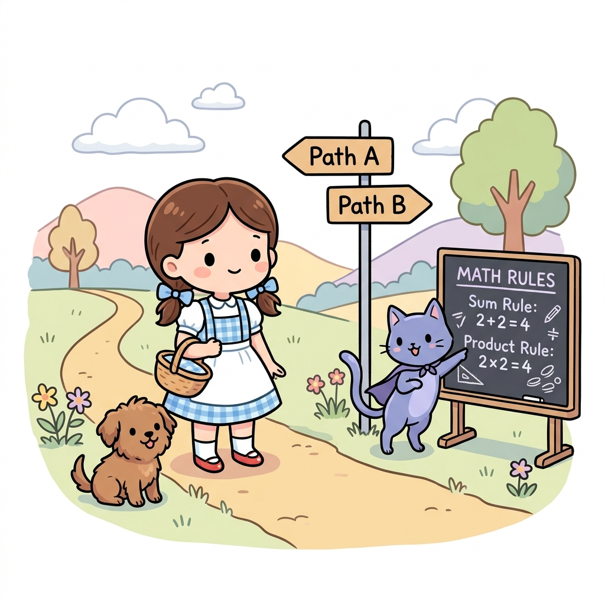
그림 02-8-1 두 갈래의 갈림길(A, B)과 각 길 속 선택지의 합/곱 가짓수를 판서하며 강의해주는 지니경우의 수는 모험 경로에서 우리가 직면할 수 있는 모든 선택지의 수입니다. 갈림길을 차례로 덧셈하여 전체 가짓수를 알아내는 합의 법칙과, 문들을 연속해서 통과하며 선택지를 곱하는 곱의 법칙의 첫 단추를 지니와 도로시의 갈림길 판서와 함께 유쾌하게 채워봅시다!
1. 학습 목표
- 사건과 경우의 수의 뜻을 이해한다.
- 동시에 일어나지 않는 두 사건에 대해 합의 법칙을 적용할 수 있다.
- 연이어 일어나는 두 사건에 대해 곱의 법칙을 적용할 수 있다.
2. 핵심 개념
(1) 사건과 경우의 수
- 사건 (Event): 주사위를 던지거나 동전을 던지는 것과 같이, 같은 조건에서 반복할 수 있는 실험이나 관찰에 의해 나타나는 결과입니다.
- 경우의 수 (Number of Cases): 어떤 사건이 일어날 수 있는 가지 수입니다.
- 예시: 주사위 한 개를 던질 때, ‘짝수의 눈이 나오는 사건’의 경우의 수는 2, 4, 6으로 총 3가지입니다.
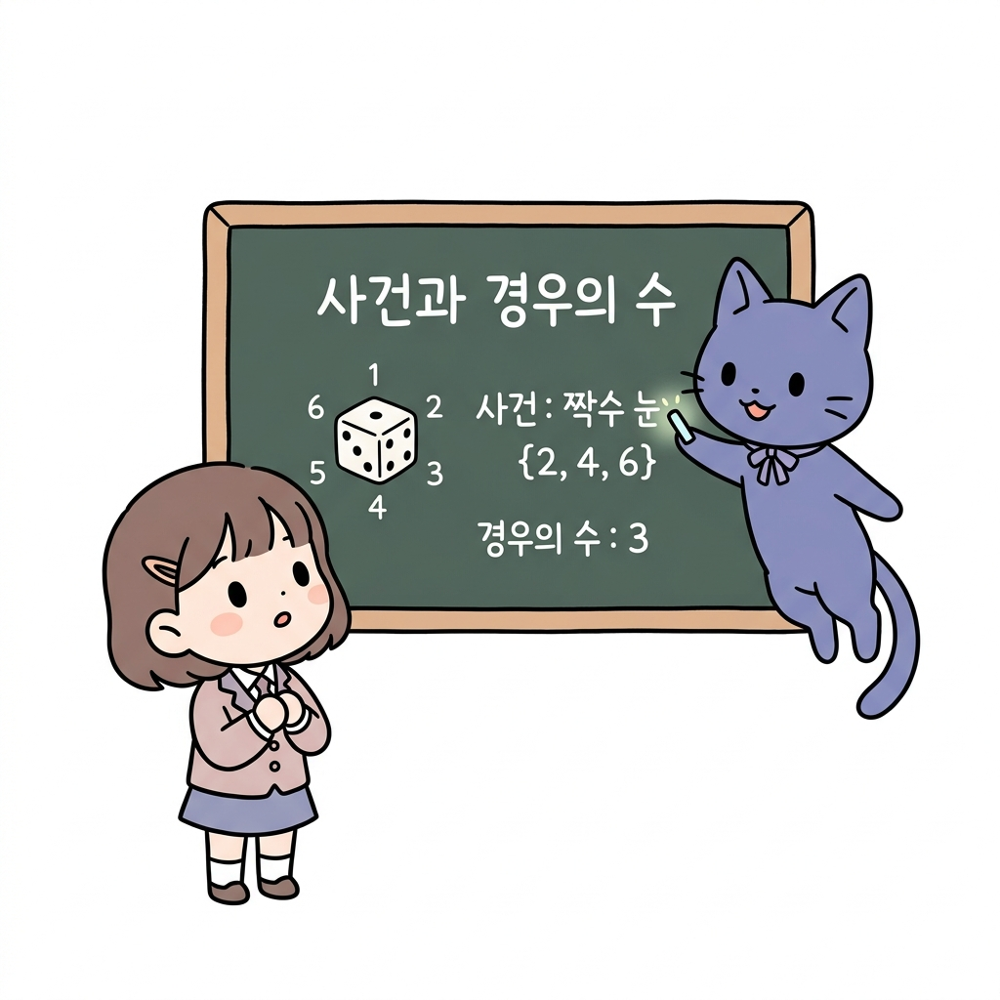
그림 02-8-2 하나의 주사위를 던지는 사건과 짝수 눈(2, 4, 6)이 나오는 경우의 수(3가지)의 관계(2) 합의 법칙 (Addition Rule)
두 사건 A, B가 동시에 일어나지 않을 때, 사건 A가 일어나는 경우의 수를 m, 사건 B가 일어나는 경우의 수를 n이라고 하면, 사건 A 또는 사건 B가 일어나는 경우의 수는 다음과 같습니다. m + n
- 키워드: 또는(Or), ~하거나
- 주의: 두 사건이 동시에 발생할 수 없을 때에만 성립합니다.
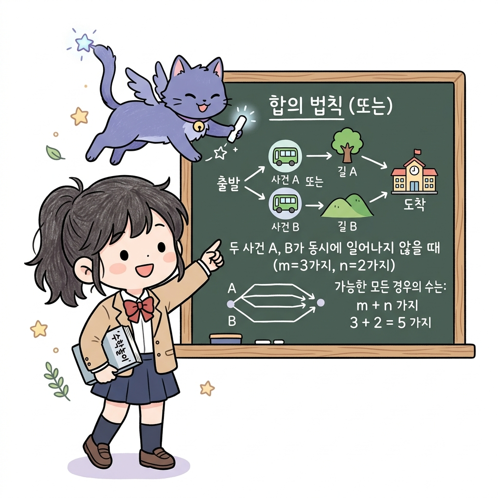
그림 02-8-3 두 사건 A 또는 B가 동시에 일어나지 않을 때 두 사건의 경우의 수를 합산(m + n)하여 계산하는 원리(3) 곱의 법칙 (Multiplication Rule)
사건 A가 일어나는 경우의 수가 m이고, 그 각각에 대하여 사건 B가 일어나는 경우의 수가 n일 때, 두 사건 A, B가 동시에(연이어) 일어나는 경우의 수는 다음과 같습니다. m × n
- 키워드: 동시에, 연이어, 그리고(And), ~하고 나서
- 주의: 여기서 ‘동시에’는 물리적으로 같은 시각만을 의미하는 것이 아니라, 두 사건이 모두 빠짐없이 일어나는 상황을 뜻합니다.
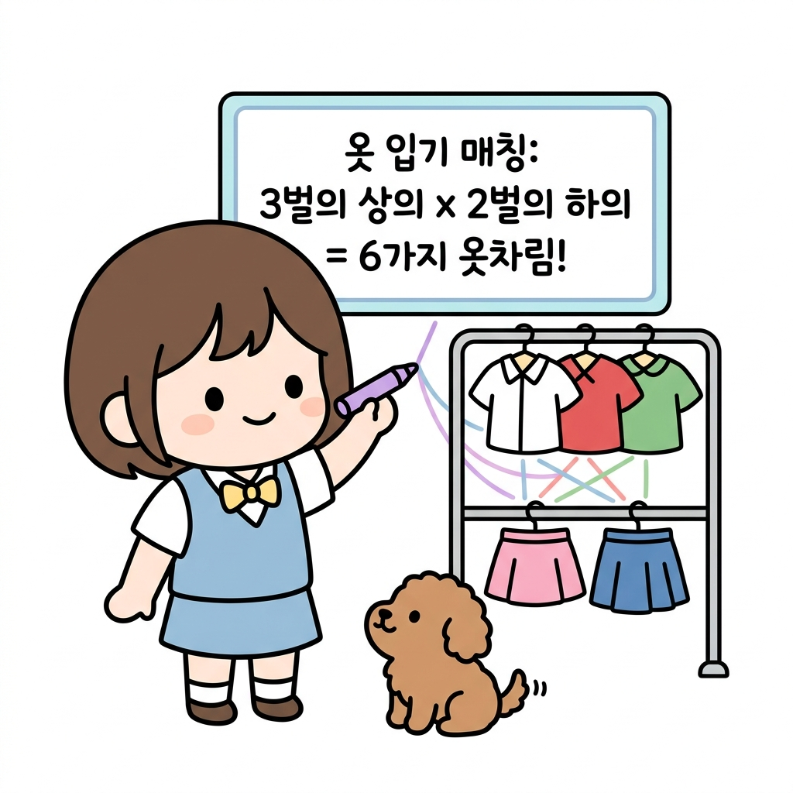
그림 02-8-4 상의와 하의를 입는 가짓수를 곱의 법칙으로 계산하는 옷 매칭 사례- 옷장에서 상의 3벌과 하의 2벌을 골라 매칭하는 경우, 상의를 고르는 각각의 경우(3가지)마다 하의를 고르는 경우(2가지)가 결합하므로 총 3 × 2 = 6가지의 조합이 생깁니다.
3. 시각 자료: 합의 법칙과 곱의 법칙 도식
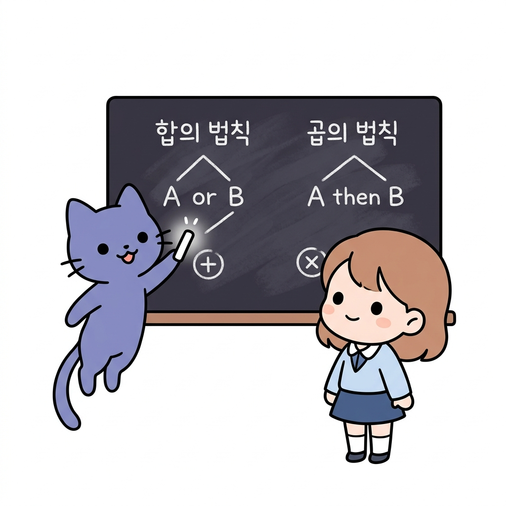
그림 02-8-5 개별 선택의 상황(Or)을 연결하는 합의 법칙과 연속적인 짝짓기 상황(And)을 연결하는 곱의 법칙의 차이 도식4. 실전 예제
예제 1 (합의 법칙)
문제: 도로시네 반에서는 현장 학습 장소로 산 3곳(설악산, 지리산, 월출산) 또는 바다 2곳(해운대, 만리포) 중 한 곳을 선택하려고 합니다. 선택할 수 있는 총 여행지의 경우의 수는 몇 가지인가요?
풀이: 산을 선택하는 사건과 바다를 선택하는 사건은 동시에 일어날 수 없습니다. 따라서 합의 법칙을 적용합니다. 경우의 수 = 3 (산) + 2 (바다) = 5가지 정답: 5가지
예제 2 (곱의 법칙)
문제: 도로시는 상의로 흰색, 빨간색, 연두색 블라우스 3벌이 있고, 하의로 핑크색 스커트, 파란색 스커트, 노란색 바지 3벌이 있습니다. 상의와 하의를 각각 하나씩 선택하여 입을 수 있는 옷차림의 총 경우의 수는 몇 가지인가요?
풀이: 상의를 고르는 사건과 하의를 고르는 사건은 연이어 일어나는(모두 만족해야 하는) 사건입니다. 따라서 곱의 법칙을 적용합니다. 경우의 수 = 3 (상의) × 3 (하의) = 9가지 정답: 9가지
예제 3 (혼합 문제)
문제: 동전 한 개와 주사위 한 개를 동시에 던질 때, 일어날 수 있는 모든 경우의 수는 몇 가지인가요?
풀이: 동전을 던져 나오는 경우의 수는 2가지(앞, 뒤)이고, 주사위를 던져 나오는 경우의 수는 6가지(1부터 6까지)입니다. 두 사건이 동시에 발생하므로 곱의 법칙을 적용합니다. 경우의 수 = 2 (동전) × 6 (주사위) = 12가지 정답: 12가지
5. 핵심 요약
- 경우의 수는 어떤 사건이 일어날 수 있는 가짓수이다.
- 사건 A, B가 동시에 일어나지 않는 선택의 상황(Or) 에서는 합의 법칙 (m + n)을 사용한다.
- 사건 A, B가 연이어 일어나는 조합의 상황(And) 에서는 곱의 법칙 (m × n)을 사용한다.
02.8.2 경우의 수 심화: 중복이 있는 합의 법칙과 곱의 법칙
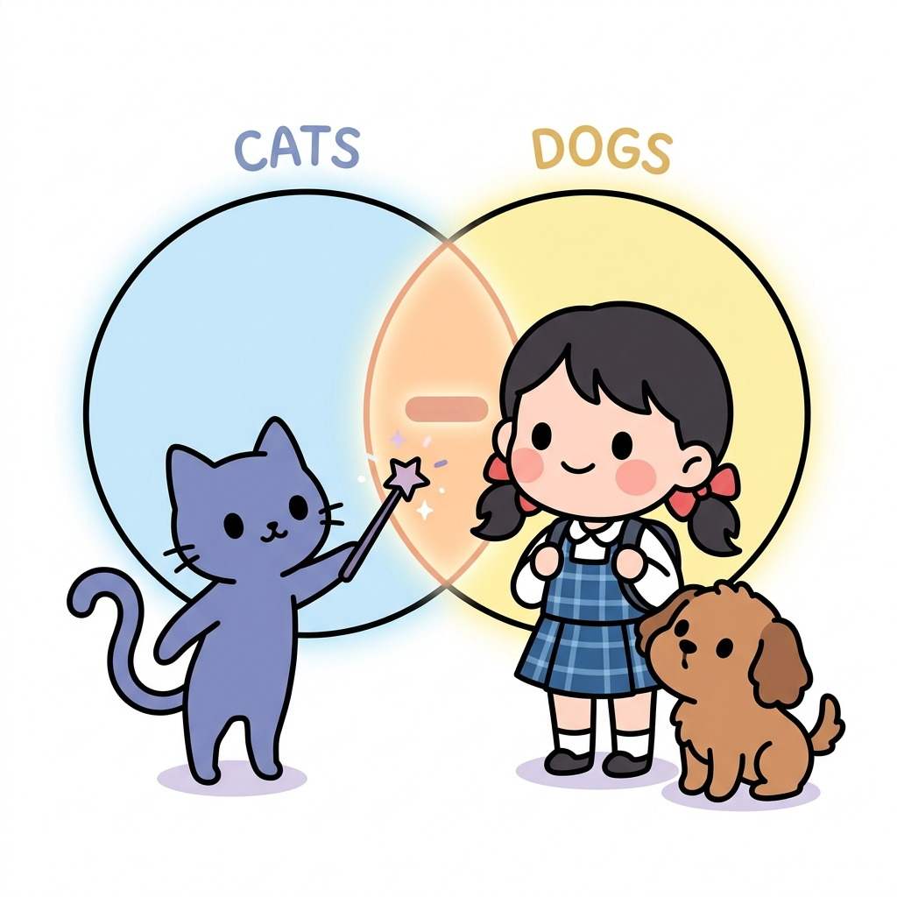
그림 02-8-6 두 벤다이어그램 마법 원반의 겹친 부위를 소거하며 중복합을 계산하는 법을 설명해주는 지니와 도로시선택지가 서로 완전히 분리되어 있지 않고 중복이 존재할 때의 합산 요령을 다룹니다. 두 개의 동그라미(벤다이어그램)가 겹치는 영역을 마법 지우개로 쏙 빼내는 지니와 도로시의 그림 설명처럼, 중복을 확실하게 제어하여 정확한 경우의 수를 계산하는 심화 비법을 정복해보아요!
1. 학습 목표
- 중복되는 경우가 있을 때 합의 법칙을 보완하여 올바른 경우의 수를 계산할 수 있다.
- 곱의 법칙의 활용 상황(순서쌍의 개수)을 다룰 수 있다.
- 수학적 확률의 분자, 분모를 구성하는 경우의 수를 엄밀히 구하는 훈련을 한다.
2. 핵심 개념
(1) 중복이 있는 합의 법칙 (Sum Rule with Overlap)
두 사건 A와 B가 일어나는 경우의 수가 각각 m, n이고, 두 사건 A, B가 동시에 일어나는 경우의 수가 l가지 존재할 때, 사건 A 또는 사건 B가 일어나는 경우의 수는 다음과 같습니다. 경우의 수 = m + n - l
- 집합적 표현 (Venn Diagram): n(A ∪ B) = n(A) + n(B) - n(A ∩ B)
- 주의: 단순히 두 사건의 가짓수를 더하기만 하면 동시에 겹쳐서 일어나는 원소들을 두 번 세게 되는(중복) 오류가 발생하므로, 겹치는 부분(l)을 반드시 한 번 빼주어야 합니다.
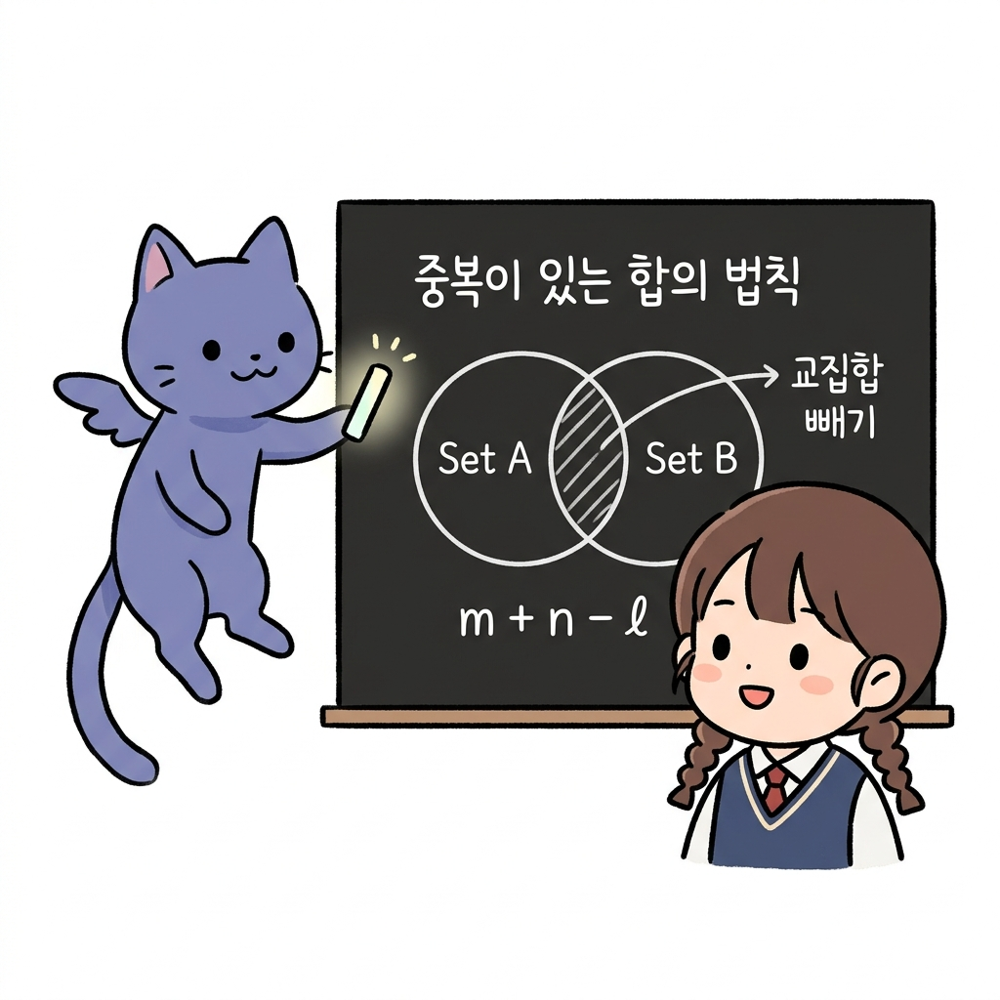
그림 02-8-7 중복이 발생하는 두 사건의 합산 시 교집합의 경우의 수(l)를 제외하여 중복을 없애는 원리(2) 곱의 법칙 (Product Rule)
사건 A가 일어나는 경우의 수가 m가지이고, 그 각각에 대하여 다른 사건 B가 일어나는 경우의 수가 n가지일 때, 두 사건 A, B가 잇달아 일어나는 경우의 수는 다음과 같습니다. 경우의 수 = m × n
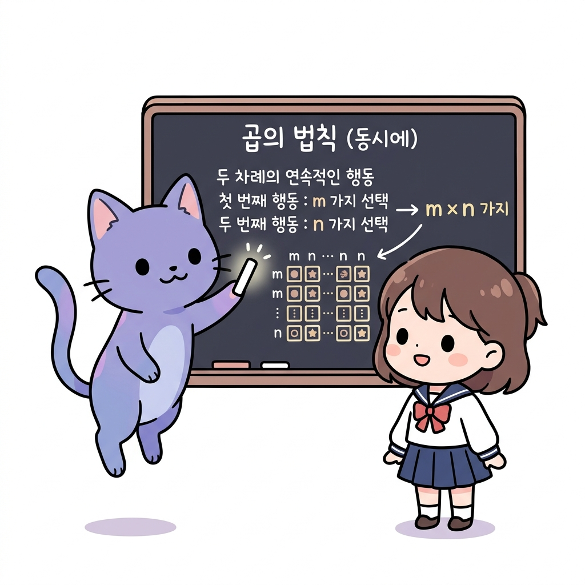
그림 02-8-8 두 사건 A, B가 연속해서 일어날 때 각 사건의 경우의 수를 곱하여 전체 가짓수(m × n)를 구하는 원리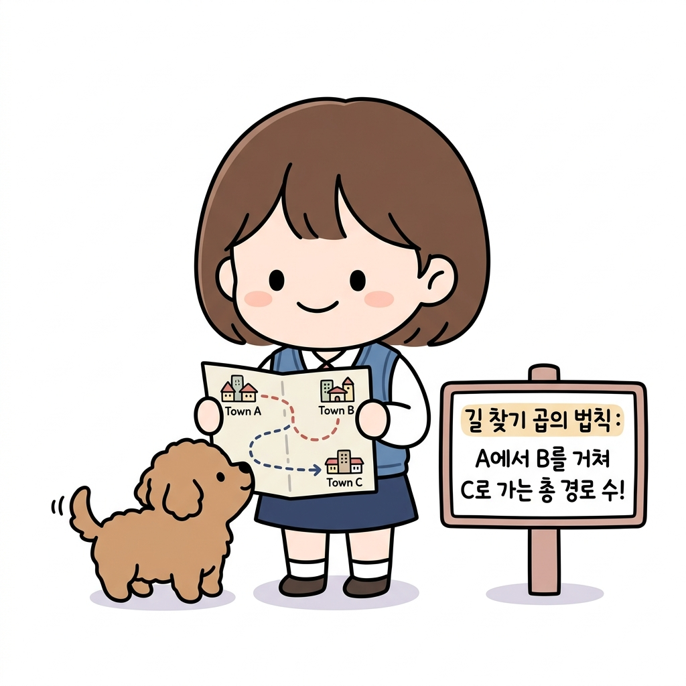
그림 02-8-9 중간 경유지를 통과하는 이동 경로의 가짓수를 곱의 법칙으로 계산하는 구조- 서울에서 대전까지 가는 버스 노선이 3가지이고, 대전에서 지리산까지 가는 기차 노선이 2가지가 있을 때, 서울에서 대전을 거쳐 지리산까지 가는 총 이동 경로의 가짓수는 3 × 2 = 6가지가 됩니다. 이는 첫 번째 선택의 각 경우의 수(3가지)마다 두 번째 선택의 경우의 수(2가지)가 결합하기 때문에 곱의 법칙이 성립하는 대표적인 예입니다.
3. 시각 자료: 벤 다이어그램을 통한 합의 법칙 도식
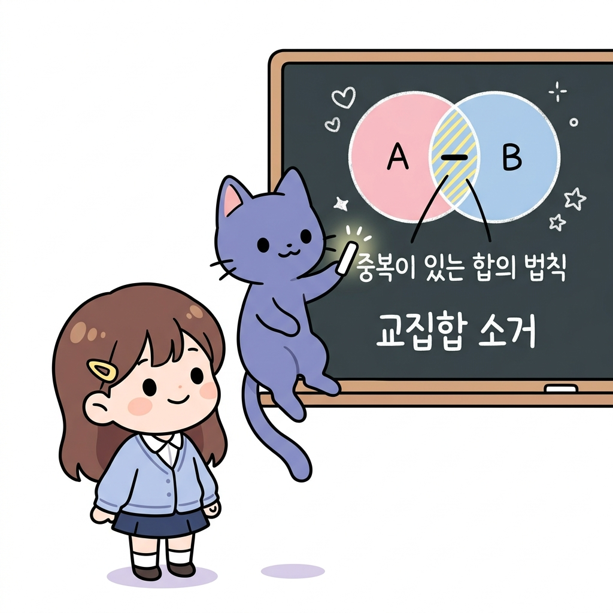
그림 02-8-10 두 집합의 합집합 계산 시 겹치는 교집합 영역을 1회 감하여 중복을 제거하는 벤다이어그램 도식4. 실전 예제
예제 1 (중복이 있는 합의 법칙)
문제: 케이블 방송의 편성표를 보니 유재석이 출연하는 프로그램은 4개(무한도전, 놀러와, 해피투게더, 패밀리가 떴다)이고, 이효리가 출연하는 프로그램은 3개(체인지, 상상플러스, 패밀리가 떴다)입니다. 카르다노 선생님이 유재석 또는 이효리가 출연하는 프로그램 중 하나를 선택하여 시청하려고 할 때, 선택할 수 있는 경우의 수는 몇 가지인가요?
풀이:
- 유재석 출연 프로그램 개수 n(A) = 4
- 이효리 출연 프로그램 개수 n(B) = 3
- 두 연예인이 동시에 출연하는 프로그램(패밀리가 떴다) 개수 n(A ∩ B) = 1
중복이 있는 합의 법칙을 적용합니다. 경우의 수 = n(A) + n(B) - n(A ∩ B) = 4 + 3 - 1 = 6가지 정답: 6가지
예제 2 (곱의 법칙)
문제: 저녁 식사 식단을 짜기 위해 찌개 한 가지와 나물요리 한 가지를 준비하려고 합니다. 준비할 수 있는 찌개가 2가지(된장찌개, 김치찌개)이고, 나물요리가 3가지(콩나물, 시금치나물, 고사리나물)일 때, 구성할 수 있는 총 식단의 경우의 수는 몇 가지인가요?
풀이: 찌개를 고르는 행위와 나물요리를 고르는 행위는 연이어 완성되는 사건입니다. 따라서 곱의 법칙을 적용합니다. 경우의 수 = 2 (찌개) × 3 (나물) = 6가지 정답: 6가지
5. 핵심 요약
- 합의 법칙을 사용할 때 두 사건이 동시에 일어나는 중복 상황(A ∩ B)이 있는지 반드시 점검하고, 중복이 있다면 $m + n - l$로 계산한다.
- 곱의 법칙은 두 개의 대상을 각각 짝짓는 순서쌍의 개수를 구하는 데 유용하다: $m \times n$.
- 확률을 계산하기 위해 경우의 수를 정확히 세는 것이 선행되어야 하며, 중복 누락 등의 실수를 피하는 것이 중요하다.
02.8.3 팩토리얼과 순서대로 나열하기
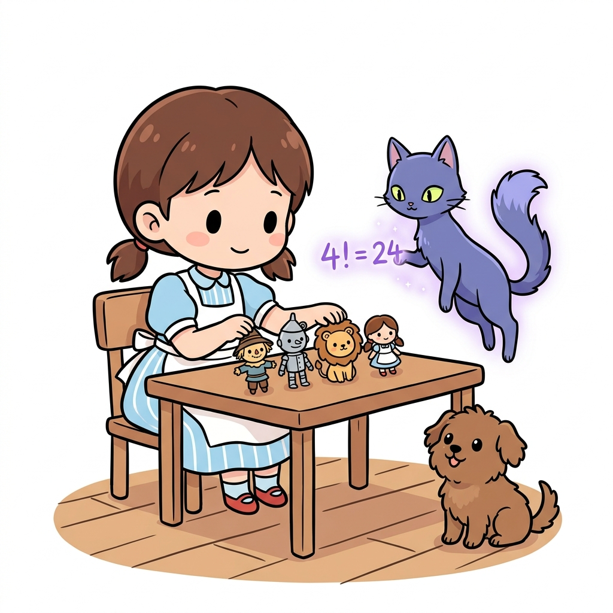
그림 02-8-11 네 마리의 인형을 일렬로 세우며 팩토리얼의 재귀적 곱셈을 설명해주는 지니와 도로시서로 다른 대상을 빠짐없이 일렬로 세우는 경우의 수인 팩토리얼(Factorial, 계승)을 이해하고 활용하는 법을 배웁니다. 도로시가 책상 위에 오즈의 마법사 캐릭터 인형들을 여러 순서로 늘어놓으며 배우는 팩토리얼(n!)의 마법 같은 곱셈 원리를 지니와 함께 기분 좋게 학습해볼까요?
1. 학습 목표
- 서로 다른 대상을 일렬로 나열하는 방법의 수를 구하는 원리를 이해한다.
- 계승을 뜻하는 팩토리얼(n!) 기호와 그 계산 방식을 익힌다.
2. 핵심 개념
(1) 일렬로 나열하는 경우의 수 (Ordering Items in a Row)
서로 다른 n개의 대상을 일렬로 늘어놓는 경우의 수를 구할 때는 첫 번째 자리부터 순서대로 들어갈 수 있는 대상의 가짓수를 곱해 나갑니다.
- 원리:
- 1번째 자리에 놓을 수 있는 대상: n가지
- 2번째 자리에 놓을 수 있는 대상: 첫 번째에 놓인 것을 제외한 (n - 1)가지
- 3번째 자리에 놓을 수 있는 대상: 앞선 둘을 제외한 (n - 2)가지
- …
- 맨 마지막 자리에 놓을 수 있는 대상: 남은 1가지
- 곱의 법칙에 따라 총 경우의 수는 다음과 같습니다: n × (n - 1) × (n - 2) × … × 2 × 1
(2) 팩토리얼 (Factorial, 계승)
1부터 n까지의 모든 자연수를 곱한 것을 n의 계승이라 하고, 기호로 n!과 같이 나타냅니다. n! = n × (n - 1) × (n - 2) × … × 2 × 1
- 읽는 방법: ‘n 팩토리얼’ 또는 ‘n의 계승’
- 특수한 값: 0! = 1로 정의합니다.
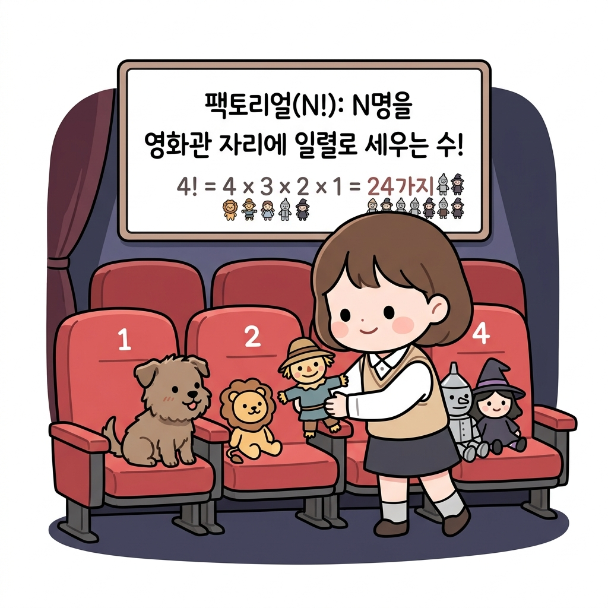
그림 02-8-12 영화관 의자에 친구들을 앉히는 가짓수를 팩토리얼 곱셉으로 구하는 원리- 도로시, 토토, 프로드 세 사람이 영화관 좌석 3개에 앉는 경우의 수를 계산해 봅시다. 1번 자리에 앉을 사람을 고르는 가짓수는 3명 중 한 명이고, 2번 자리에는 남은 2명 중 한 명, 마지막 3번 자리에는 남은 1명이 자동으로 앉게 됩니다. 이 연쇄적인 결정을 수식으로 나타낸 것이 바로 3! = 3 × 2 × 1 = 6입니다.
3. 시각 자료: 3가지를 나열하는 트리 도식
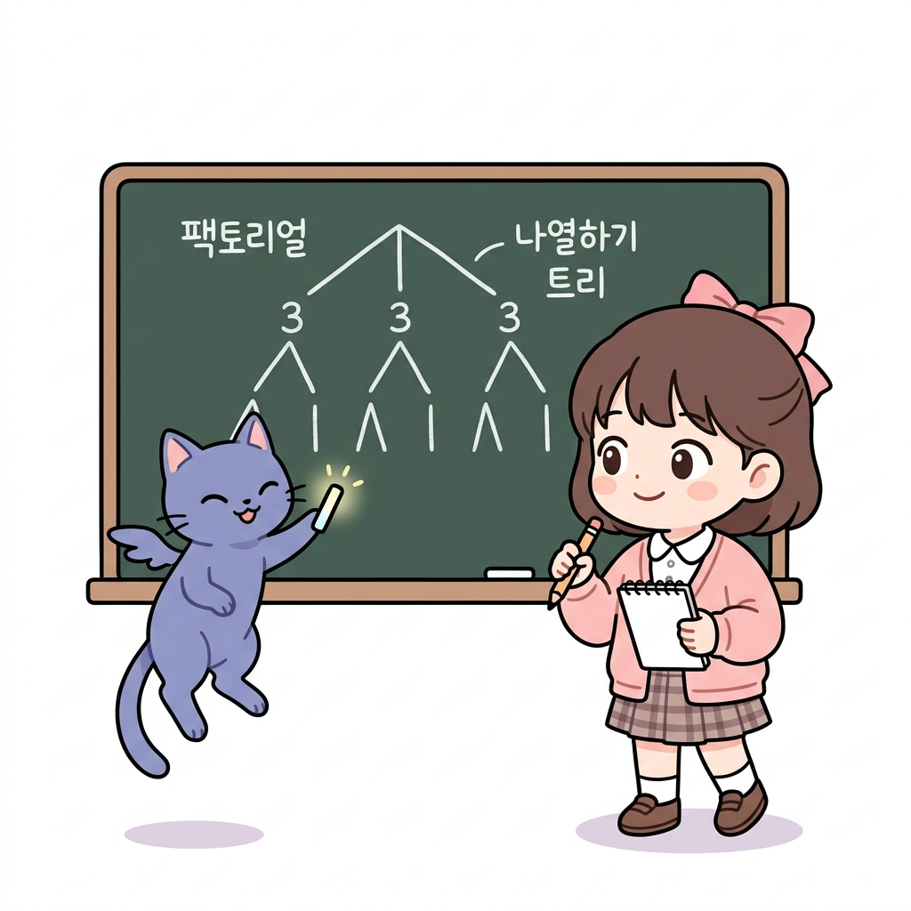
그림 02-8-13 3가지 원소를 중복 없이 나란히 늘어놓을 때 분기하는 가짓수를 묘사한 나열 트리 도식4. 실전 예제
예제 1 (기본 줄 세우기)
문제: 도로시, 카르다노, 토토 3명이 극장 매표소 앞에 나란히 줄을 서려고 합니다. 이들이 줄을 설 수 있는 총 경우의 수는 몇 가지인가요?
풀이: 서로 다른 3명을 일렬로 세우는 경우의 수이므로 3!을 계산합니다. 경우의 수 = 3! = 3 × 2 × 1 = 6가지 정답: 6가지
예제 2 (다섯 명의 멤버 배치)
문제: 무한도전 멤버 5명(재석, 명수, 형돈, 준하, 홍철)을 무대 위 5개의 자리에 왼쪽부터 일렬로 배치하려고 합니다. 이들을 일렬로 세울 수 있는 총 경우의 수는 몇 가지인가요?
풀이: 서로 다른 5명을 일렬로 세우는 경우의 수이므로 5!을 계산합니다. 경우의 수 = 5! = 5 × 4 × 3 × 2 × 1 = 120가지 정답: 120가지
5. 핵심 요약
- 서로 다른 n개를 일렬로 줄 세우는 방법의 수는 곱의 법칙을 연속으로 적용한 것이다.
- 1부터 n까지의 자연수를 차례대로 곱한 것을 n! (n 팩토리얼) 이라 부르며, 줄 세우기 문제의 대표적인 공식이다.
- 팩토리얼 연산은 수의 크기가 아주 빠르게 커지는 성질을 가지고 있다 (예: 3! = 6, 5! = 120, 10! = 3,628,800).
02.8.4 순열: 택하여 줄 세우기
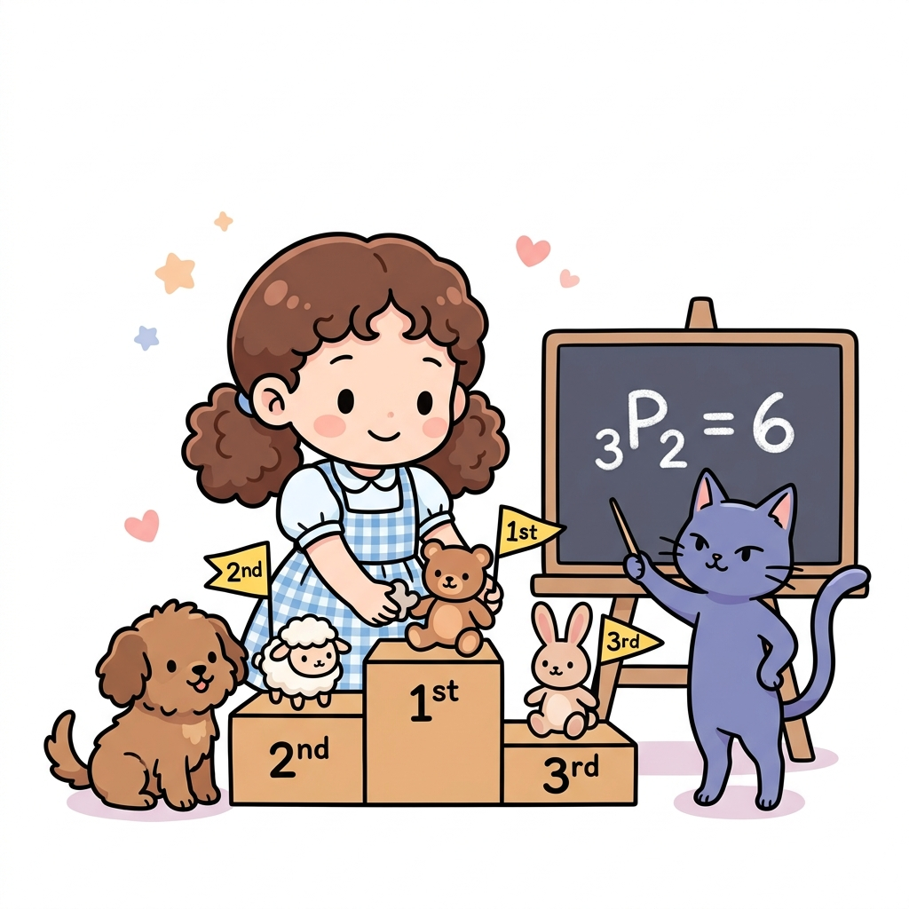
그림 02-8-14 시상대(1등, 2등, 3등 단상)에 인형들을 줄 세우며 순열 기호 nPr의 의미를 학습하는 지니와 도로시서로 다른 n개 중 r개를 선택해 순서를 고려하여 줄 세우는 순열(Permutation)을 공부합니다. 시상대의 각 단상에 동물 인형들을 배치하며 가짓수를 계산해내는 도로시와 지니의 놀이 학습처럼, 순열(nPr)의 원리를 탄탄히 이해해 봅시다!
1. 학습 목표
- 서로 다른 n개 중에서 r개를 선택하여 일렬로 배열하는 경우의 수(순열)를 구하는 원리를 이해한다.
- 순열 기호 nPr의 의미를 알고, 팩토리얼과의 관계를 이해하며 식을 변형할 수 있다.
2. 핵심 개념
(1) 순열 (Permutation)
서로 다른 n개 중에서 r(0 < r ≤ n)개를 택하여 순서대로 나열하는 것을 순열이라고 하며, 기호로 nPr과 같이 나타냅니다.
- 읽는 방법: ‘n P r’ 또는 ‘n 퍼뮤테이션 r’
- 계산식: nPr = n × (n - 1) × (n - 2) × … × (n - r + 1) (곱하는 개수가 r개)
(2) 순열의 공식과 팩토리얼
순열의 계산식에 분자와 분모에 (n - r)!을 곱해 주면 다음과 같이 팩토리얼 기호만으로 공식을 나타낼 수 있습니다. nPr = n! / (n - r)!
- 의미: 전체 n개를 일렬로 줄 세우는 n! 중에서, 선택되지 않은 (n - r)개의 순서 나열(줄 세우기)인 (n - r)!을 나누어 제외(약분)하는 구조입니다.
- 특수한 경우:
- nPn = n! / 0! = n! (서로 다른 n개 전체를 일렬로 나열하는 경우)
- nP0 = n! / n! = 1 (아무것도 택하지 않는 것도 1가지 경우로 침)
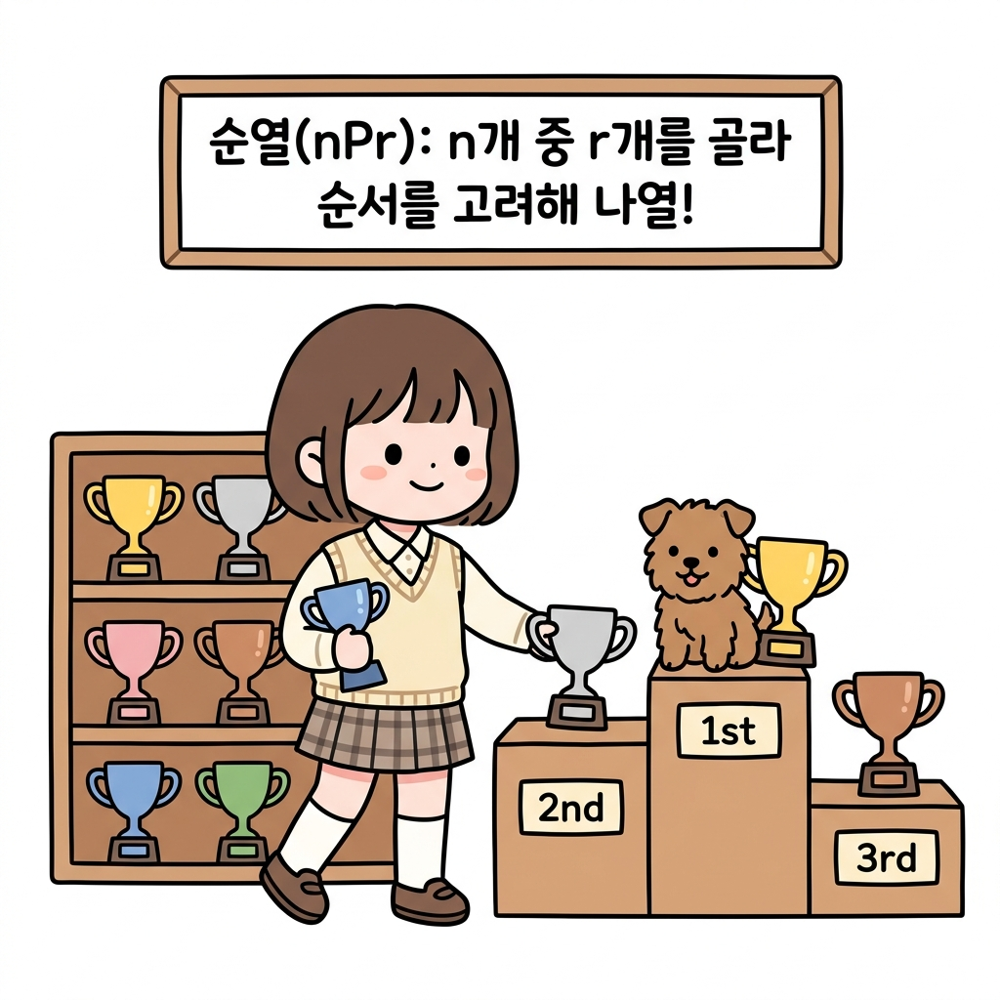
그림 02-8-15 전체 트로피 중 등수별 3개를 순서대로 매칭하여 배치하는 가짓수를 구하는 순열 사례- 진열대에 놓인 서로 다른 5개의 트로피 중 1등, 2등, 3등(순서와 직책이 구분됨)에게 부여할 트로피 3개를 순서대로 나열해 고르는 경우의 수는 순열 공식을 사용하여 5P3 = 5 × 4 × 3 = 60가지가 됩니다. 순열은 이처럼 대상을 선택하는 순서가 최종 결과에 영향을 주는 상황(Order matters)에 사용합니다.
3. 시각 자료: 순열의 자리 배치와 공식 유도
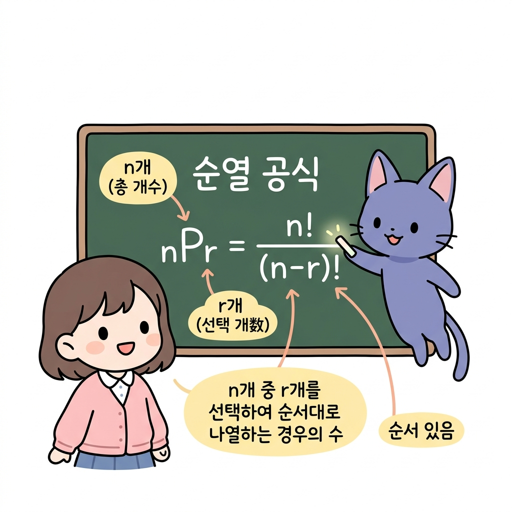
그림 02-8-16 전체 대상 중 특정 개수를 택하고, 이들의 자리 배열 순서까지 고려한 경우의 수(순열)를 계산하는 기호식 정의도4. 실전 예제
예제 1 (올림픽 메달 시나리오)
문제: 4강에 대한민국, 중국, 영국, 프랑스 4개국이 진출했습니다. 이 중 금메달, 은메달, 동메달을 획득하는 국가들의 총 경우의 수는 몇 가지인가요?
풀이: 서로 다른 4개국 중에서 순서를 생각하여(메달 종류) 3개국을 선택하여 배열하는 순열 문제입니다. 경우의 수 = 4P3 = 4 × 3 × 2 = 24가지 정답: 24가지
예제 2 (학급 임원 선출)
문제: 학생 수가 30명인 학급에서 회장 1명, 부회장 1명을 선출하는 경우의 수는 몇 가지인가요?
풀이: 회장과 부회장은 직책(순서)의 구분이 있으므로 서로 다른 30명 중 2명을 뽑아 나열하는 순열 문제입니다. 경우의 수 = 30P2 = 30 × 29 = 870가지 정답: 870가지
5. 핵심 요약
- 순열 (nPr)은 대상을 뽑고 나서 순서대로 나열까지 하는 가짓수이다.
- nPr 계산은 n부터 시작해 1씩 줄여가며 총 r개의 숫자를 곱한다.
- 팩토리얼 기호를 사용하여 순열 공식을 nPr = n! / (n - r)!로 표현할 수 있으며, 이는 식의 증명이나 약분에 널리 활용된다.
02.8.5 조합: 순서 없이 선택하기
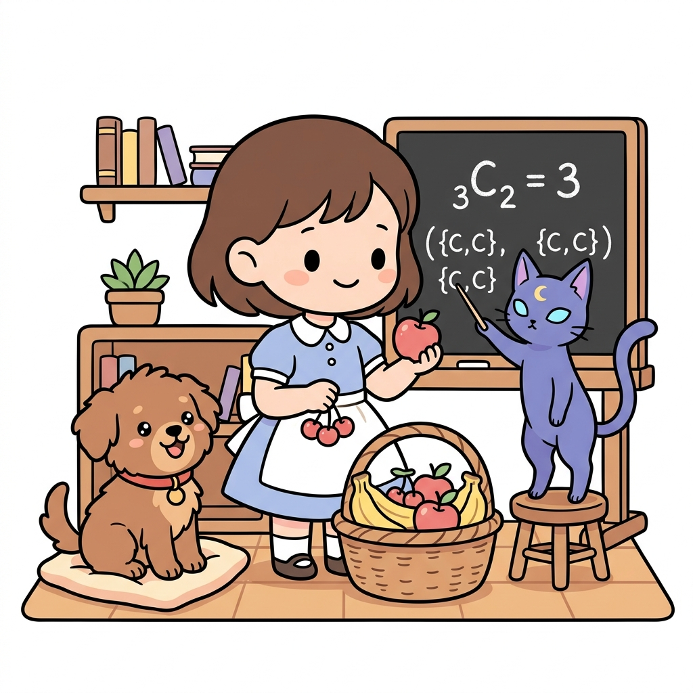
그림 02-8-17 여러 과일 중 두 과일을 순서 없이 양손에 쥐며 조합 기호 nCr을 배우는 지니와 도로시순서와 관계없이 특정 대상을 묶음으로 골라내기만 하는 조합(Combination)을 공부합니다. 바구니에 담긴 사과, 바나나, 체리 중 도로시가 순서 없이 과일을 골라 쥐는 직관적인 놀이 과정을 통해 순열과의 명확한 차이점과 조합(nCr)의 신비로운 대칭 성질을 정복해봅시다!
1. 학습 목표
- 순열과 조합의 차이점을 파악한다.
- 서로 다른 n개 중에서 순서를 생각하지 않고 r개를 선택하는 경우의 수(조합, nCr)를 구하는 원리를 이해한다.
- 조합의 성질 nCr = nCn-r을 이해하고 활용하여 복잡한 계산을 단순화한다.
2. 핵심 개념
(1) 조합 (Combination)
서로 다른 n개 중에서 순서를 생각하지 않고 r(0 < r ≤ n)개를 택하는 것을 조합이라고 하며, 기호로 nCr과 같이 나타냅니다.
- 읽는 방법: ‘n C r’ 또는 ‘n 콤비네이션 r’
- 순열과의 관계: nPr은 대상을 뽑아서 순서대로 나열하는 것이므로, 조합으로 그냥 뽑아 놓은 r개의 대상을 일렬로 나열하는 가짓수(r!)만큼 중복이 생깁니다. nCr = nPr / r! = n! / (r!(n - r)!)
그림 02-8-18 맛을 고르고 컵에 담을 때 순서와 상관없이 조합으로 계산하는 사례
- 아이스크림 전문점에서 판매하는 5가지 맛 중에서 순서와 상관없이 3가지를 골라 하나의 큰 컵에 담는 경우를 계산해 봅시다. 콘 위에 차례대로 얹어 순서가 중요한 경우(순열)와 달리, 한 컵에 담기면 최종 결과는 동일하므로 순서가 무의미합니다. 따라서 5P3 = 60가지 중 3개를 줄 세우는 가짓수(3! = 6)만큼의 중복을 나누어주어 총 5C3 = 60 / 6 = 10가지의 선택을 할 수 있습니다.
(2) 조합의 유용한 성질
- 여조합의 성질 (대칭성):
nCr = nCn-r
- 의미: n명 중에서 초대할 r명을 고르는 방법의 수는, 초대하지 않고 제외할 (n - r)명을 고르는 방법의 수와 완벽히 같습니다. r이 n의 절반보다 클 때 이 성질을 쓰면 계산량이 획기적으로 줄어듭니다.
- 특수한 값:
- nCn = 1
- nC0 = 1
3. 시각 자료: 순열과 조합의 차이 및 공식 정리
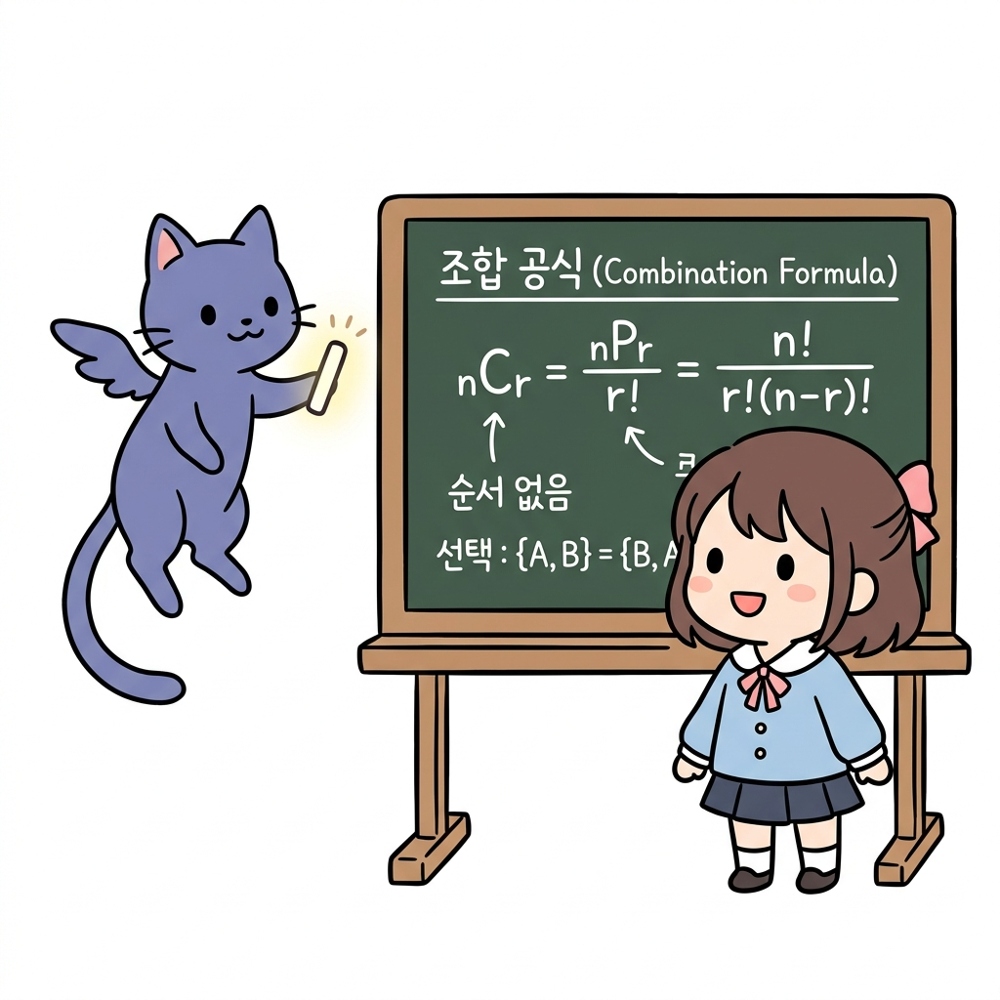
그림 02-8-19 대상을 순서 없이 묶음으로 짝짓는 경우의 수(조합)와 순열의 나눗셈 중복 제거 관계도4. 실전 예제
예제 1 (마트에서 아이스크림 고르기)
문제: 마트에 있는 10가지 종류의 아이스크림 중에서 서로 다른 3가지를 고르는 경우의 수는 몇 가지인가요?
풀이: 맛보는 순서는 상관없이 단순히 고르기만 하므로 조합 문제입니다. 10C3 = 10P3 / 3! = (10 × 9 × 8) / (3 × 2 × 1) = 120가지 정답: 120가지
예제 2 (여조합 성질을 활용한 계산)
문제: 학생 20명 중에서 생일파티에 초대할 친구 18명을 선택하는 경우의 수는 몇 가지인가요?
풀이: 18명을 순서 없이 선택하므로 20C18을 계산해야 합니다. 하지만 조합의 성질 nCr = nCn-r을 사용해 초대받지 못할 2명을 선택하는 문제로 바꾸어 풉니다. 20C18 = 20C20-18 = 20C2 20C2 = (20 × 19) / (2 × 1) = 190가지 정답: 190가지
5. 핵심 요약
- 순열은 순서가 있고(줄 세우기), 조합은 순서가 없다(대표 뽑기, 묶음 만들기).
- 조합의 수 nCr은 순열의 수 nPr에서 대상의 순서 배열 가짓수인 r!로 나눈 값이다.
- 계산할 때 아래 첨자 r이 클 때에는 nCr = nCn-r을 적극 활용하여 간단하게 계산한다.